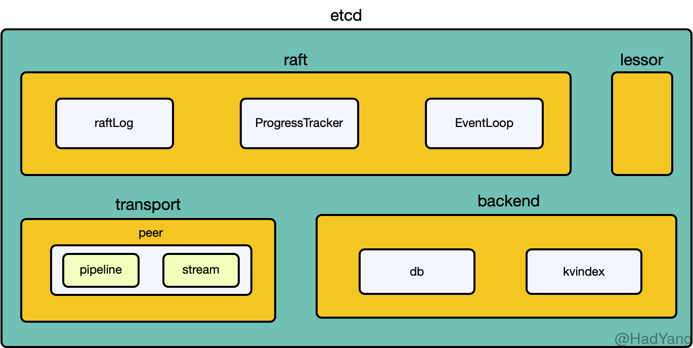

【ETCD】初探
文章目录
ETCD
ETCD 提供强一致性的分布式 K-V 存储，客户端通过 HTTP/HTTPS 协议与其进行交互。同时还可以对 Key 进行 TTL 设置、用户级别的 权限管理 以及 事务。ETCD 的整体架构如下图所示，在后续的文章中，也会详细介绍各个部分。

ETCD 中主要有四个组成部分，raft 负责整个 Raft 协议内容（包括状态机）；transport 是集群中节点的通信模块；lessor 负责整个键空间的过期；backend 负责底层存储。在实现上，ETCD 采用有强大的跨平台能力和高性能的 Go 语言编写，底层节点采用 Raft 共识算法进行通信。由于 Raft 算法的特性，ETCD 中主节点的吞吐量是很重要的指标。同时，由于 Raft 算法需要与集群中大部分节点进行通信，集群节点之间的网络延迟会极大的影响 ETCD 的整体性能。
使用场景
ETCD 名称的起源，一种是 Unix 系统上的 /etc 文件夹和 d 分布式系统。在单机上 /etc 文件夹是用来存放配置信息的，而 ETCD 是分布式环境下存放配置信息的。
ETCD 被设计为大规模分布式系统的通用基础，这些系统永远不会容忍裂脑操作，并且愿意牺牲可用性来实现此目的。ETCD 中存储的数据有一致性和可容错保证。ETCD 集群旨在提供具有最稳定性，可靠性，可伸缩性和性能的键值存储。
分布式系统将配置信息存储在 ETCD 的一致性 kv 存储中，来实现 服务发现、分布式任务协调。常见的还会使用 ETCD 进行 选举、分布式锁 以及 服务健康监控。
存储结构
ETCD 是被设计用来存储低频更新的数据，并且提供可靠的查询。ETCD 通过暴露老版本的 KV 数据，来支持 快照读取 以及 监听历史事件。
ectd 提供了一个持久化、多版本、并发控制的数据模型，当 Key 写入新值时，ETCD 会同时保留旧值。 KV 存储是不可变的，更新操作都不会进行替换更新，而是生成新版本的数据。所有老版本的 Key 依然是能可访问和监听的。为了防止数据无限制的增长，ETCD 会压缩老版本的数据。
修订与Key
从逻辑视图来看整个 ETCD 的存储是无层级结构的 Key 空间，Key 空间的字符串按 字典序 排序，所以可以高效的支持 范围查询。
Key 空间保留多个修订，当存储被创建时，初始化修订为1。每次原子更新（事务可能包含多个操作）会在 Key 空间创建一个新的 修订，更新并不会改变之前的修订。在整个集群的生命周期中，修订是单调递增的。Key 的老版本数据可以通过之前的修订获取，也可以对之前的修订进行监听。如果数据被压缩，则在压缩修订之前的修订都会被移除。
ETCD 持有一个 64bit 计数器，每次 Key 空间的修改都会产生一个 修订，这个计数器也就随之递增。修订的用途就是提供一个全局的逻辑时钟，使所有的更新能按顺序写入。修订代表的数据是增量的存储空间数据的改变，其内部就会将这些改变写入底层的 B+ 树中。
修订在支持 ETCD 的 MVCC 功能上十分重要。由于历史 Key 空间的修订都保留着，所以 MVCC 模型可以看到过去的数据。对于历史修订的处理策略可以通过配置修改，通常来说 ETCD V3 版本是按时间进行压缩的，这个时间一般为几小时。同时也可以按修订的版本进行压缩，只保留最近 n 个版本的修订。
从 Key 的创建到删除是一个生命周期，每个 Key 可能会有一个或多个生命周期。在创建 Key 时，如果当前修订中不存在该 Key，则其版本为 1 。当删除一个 Key 时，通过将的 Key 的版本置为 0 来逻辑删除。每次 Key 的修改都会增加其 版本号，版本号在 Key 的生命周期中是单调递增的。当进行压缩时，所有在压缩修订之前的生命周期已经结束的 Key 都会被移除，并且移除压缩修订之前设置的值。
过期
Lease 机制是 ETCD 中实现过期的方式，Lease 最主要是 ETCD 的服务端用来对客户端探活的。每个客户端连接服务端时，都会被授予带超时时间一个 Lease，客户端可以通过定时的心跳包来维持 Lease 不过期。
同时，客户端也可以通过命令让服务器创建一个 Lease，然后将 Key 绑定到 Lease 上，每个 Key 最多只能绑定一个 Lease。当 Lease 过期 或 撤销 后，所有绑定在这个 Lease 上的 Key 都会被删除。所有 过期 的 Key 都会产生删除事件。
基本操作
在 ETCD 针对 Key 空间的操作被分为三类： KV 、Watch 和 Lease
KV
KV 接口是 ETCD 中最常用的接口，其分为 原子操作 和 事务操作两种。
原子操作
PUT 是 ETCD 中修改和创建 KV 的方式，其用法比较简单：
etcdctl put foo bar：创建一个 key=foo，value=bar 的键值对etcdctl put foo1 bar1 --lease=1234abcd：创建一个 key=foo，value=bar 的键值对，并将其绑定到 Lease1234abcd上
相比来说 GET 方法就复杂的多，这里只提几种比较有意思的用法，更多用法参考官方文档： Interacting with ETCD
etcdctl get foo -w=json： 简单的 KV 查询，并返回 Key 相关的详细信息etcdctl get foo foo3： 查询 “foo” 到 “foo3” 范围内的所有 KVetcdctl get --prefix --order="ASCEND" --limit=2 foo： 查询前缀为 “foo” 的所有 Key，同时按 Key 顺序排序，取前 2 个 KV（ETCD 的锁就是这样实现的）etcdctl get --prefix --rev=4 foo： 查询前缀为 “foo” 并且修订版本为 4 的所有 Keyetcdctl get --from-key b： 查询 value 小于 key=b 的所有 Key
事务操作
在 ETCD 中的事务操作都是 CAS 形式的，比如：
#compares:
mod("foo1") > "0"
#success requests (get, put, del):
put foo1 "bar11"
#failure requests (get, put, del):
put foo1 ""
SUCCESS
OK
这段事务就是首先比较 Key “foo1” 的最近一次修改 Key 的修订版本，如果大于 0 ，则执行 put foo1 "bar11"，否则执行 put foo1 ""。
ETCD 支持的可比较字段有：
- MOD：最近一次修改 Key 的修订版本
- VERSION：Key 的版本
- CREATE：创建 Key 的修订版本
- VALUE：Key 的值
同时，ETCD 还支持以下四种判断方式：
- EQUAL： 等于
- GREATER：大于
- LESS：小于
- NOT_EQUAL：不等于
Watch
Watch 提供 Key 变更的异步事件监听，在 ETCD V3 中会持续对 Key 进行监听，不论是历史的还是当前的修订。
Watch 是一个长请求，通过 gPRC 的流式通道进行数据交换，客户端通过流式通道开启一个监听，并从流式通道中获取监听事件。一个 Watch 流可以同时操作多个 Watch，这种多路复用能有效减少内存占用和连接数。
etcdctl watch foo1： 监听单个 Keyetcdctl watch --prefix foo： 按前缀监听多个 Keyetcdctl watch --rev=2 foo： 从某个版本的修订开始监听
Watch 对事件提供以下保证：
- 顺序性： 事件顺序是按照修订的顺序，如果一个事件被发布，则先于其的事件都不会再次发布
- 可靠性： 事件序列不会丢弃任何事件，有事件序列
a < b < c，如果接收到事件 c，那么其一定会接收到事件 b - 原子性： 事件序列中的每个事件，一定是包含整个修订。当在同一个修订中修改多个 Key 时，不会出现多个事件。
Lease
Lease 的相关接口就比较简单。
etcdctl lease grant 60： 生成一个 60s 的新 Leaseetcdctl lease revoke 32695410dcc0ca06： 释放 Lease